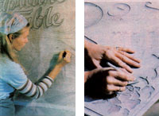
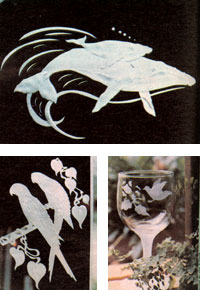
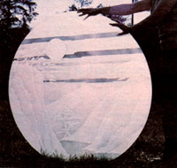
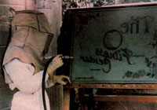
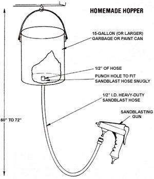

Have A Blast With Glass
By Tom Princen
January/February 1982
Etching with sand can be a challenging, creative, and commercially rewarding endeavor.
Most people think of sandblasting as a purely industrial skill. However, in the hands of a skilled craftsperson, the same equipment that is used to gnaw away paint in auto body shops can be used to cut lovely designs on glass. Furthermore, the artist who can etch shop windows, tops for coffee tables, wineglasses, and the like will find that customers are numerous ... and eager to pay top prices for his or her work.
THE RIGHT MATERIALS
In order to try your hand at this art form, you'll need glass, masking, and sand. (Both sand and acid will produce a frosted look on glass, but sandblasting can offer the artisan a greater range of depths and textures than do the corrosive chemicals.)
Local glass companies will often give away (or sell for next to nothing) broken glass and mirrors, which-at the very least-can be used for practice. Once you've gained some experience, the same stores can supply you with plate glass and mirrors of sufficient thickness (at least 3/16" . . . but 1/4" is better) for this craft. The firms can also cut large sheets to your specifications ... although they can't trim tempered safety glass, since that material must be ordered precut from the manufacturer. (Federal building codes require that the "heavy duty" panes be used for any installation within 18 inches of the floor or 12 inches of any door. Consult your local codes for additional regulations.) And, of course, restaurant supply houses will usually sell mugs, glasses, and stemware at a discount if you buy in quantity.
Your design can be cut from any adhesive material ... including masking tape, contact paper, and 1/8" rubber resist. This last product works best for heavy blasting, in which a range of depths (and, therefore, of shades and textures) and very clean, smooth cuts are desired. Resists are occasionally available at art supply stores, but you'll probably have more luck locating them at a monument carving company.
However, if you can't find local suppliers and can afford to buy in quantity, the 3M Company manufactures rubber resist under the name "Sandblast Stencils" (Catalog No. 507-508). It is available both in 10-yard rolls (varying in width from 12-1/4" to 30") priced at $30 to $74, and in cases of 50 flat sheets (12-1/4" X 24-1/2") that list for $113. The company also produces 9mm. and 15mm-thick Flatbush masking tape (Catalog Nos. 280 and 300). Suppliers should be listed under "Tapes-Industrial" in the Yellow Pages.
For glass etching, the most desirable sand is extra-fine, 90-mesh grade. The coarser 60-mesh is more readily available, however, and does work just about as well for all but the most delicate jobs. Building supply companies sell common types of sand, but it may be necessary to order the finest grades from specialty stores. (Your used sand can be recycled by sifting it through a fine-meshed window screen . . . or it can do wonders for heavy-clay garden soil.)
THE RIGHT EQUIPMENT
Standard sandblasting equipment will complete the would-be glass-engraver's shopping list. The outfit should consist of a compressor that delivers sand, at high pressure, from a container (called a hopper) to a valve (or gun). A nozzle at the tip of the valve is used to create the fine spray of sand that actually cuts into the glass surface.
Industrial sandblasters, accustomed to big jobs and big equipment, will frequently advise using large compressors. It's true that a 5- to 10-horsepower unit (which could set you back $1,000 to $1,500 new) might provide the greatest possible versatility-since its added pressure can handle heavy plate-glass jobs-but a 3-HP model (new ones will run in the $350 to $550 range) is generally sufficient. Used compressors are much less expensive, of course, but if you can work out a sharing deal with a local painter during his or her off season, you can eliminate this lion's share of your startup costs.
The hopper can be a simple, homemade gravity-fed device (see the accomp anying illustration). There are also highpressure hoppers that connect directly with the compressor and mix air with the sand . . . but such units are priced from $100 to $500.
Valves and guns run from $40 to $160. Either ceramic or metal nozzles (they're $2.00 to $3.00 each when bought by the dozen) can be used. The bigger metal tips hold up longer when spraying coarse sand, but when using a fine-grade grit, smaller ceramic tips (for example, 3/32") will be necessary. While valves, hoses, and assorted fittings can be scrounged, nozzles-which tend to wear out quickly-just about have to be purchased new.
And-even though the most important sandblasting safety measure is simply to be sure that you have properly working machines, well-connected hoses, and a clean work place-an air-fed helmet is a critical piece of protective equipment . . . because sandblasting, like many other industrial (and even artistic) processes, does have its dangers. One such craft-related hazard is a disease known as silicosis. For the benefit of MOTHERreaders who live outside the Mount St. Helens ashfall zone (and thus are not necessarily experts on the potential health effects of excessive exposure to silica), here are some words of caution about this occupational risk.
Silicosis is a progressive lung disease that results from prolonged inhalation of minute pieces of crystalline silica. The smallest particles-especially those less than ten microns in diameter-cause the most damage. Breathlessness and coughing are common symptoms, and reduced exercise tolerance, as well as such infections as bronchitis, can also be associated with the problem. However, permanent damage to lung tissue can be diagnosed only after several years of exposure, and susceptibility varies from one person to another. The prevention and treatment of the disease are one and the same: Reduce your exposure to the tiny particles by wearing proper gear that screens out the dust. Don't try to save money by skimping on this investment in your future health.
The protective air-fed helmet covers the head and upper torso, has a safety visor, and should cost less than $45. (Replacement visors can be purchased, or made for very little cost from sheets of plexiglass.) A separate, 1/2-HP compressor ($100 to $200 new) is used to deliver clean air to the helmet via hoses. A respirator ($4 to $20), which is worn directly on the face and under the helmet, provides additional protection from the fine dust particles. Coveralls and a pair of gloves complete the bizarre-looking safety costume.
Industrial supply houses or mail order departments (such as Truman's, Inc., Dept. TMEN, 17 Kenmore Avenue, P.O. Box 2739, Youngstown, Ohio 44507) can provide most of the sandblasting equipment listed, plus all the necessary connections, pressure regulators, water traps, helmets, and the like. Sears and Montgomery Ward also offer home sandblasters. To learn the proper use of the equipment, you can consult local gravestone-makers, house and car painters, or industrial cleaners.
PERFECT THE TECHNIQUE
Like the skills required for most arts and crafts, those necessary for first-rate glass etching develop slowly, but-once the gear and materials to set up shop have been bought, scrounged, or borrowed-the following tips should enable even a beginner to make some attractive glass or mirror pieces in short order.
Any etching begins with a pencil drawing, so start your project by making a rough sketch to scale. Then use tracing paper (the durable vellum type is best) for your final drawing, as the see-through sheets are easy to line up when transferring the outline to the masking. Of course, your design should be made up of substantial shapes and lines, since every element will-in order to be etched into the glass-have to be cut out of the masking material. As in silk-screening, hairlines and intricate details are only for the advanced craftsperson.
If you want to include lettering, it can be drawn freehand or stenciled, and a book of alphabets can help you vary the style. Two good ones are Letter Forms: 110 Complete Alphabets by Frederick Lambert, edited by Theodore Menter, and Art Nouveau Display Alphabets: 100 Complete Fonts by Dan X. Solo (Dover Publications, $3.00 each).
For commissioned work, it's a good idea to show your sketches to the buyer before ordering the glass and starting the blasting. (After all, pencil lines can be erased, but marks etched on glass are permanent.) At the same time, settle on a price and a completion date. Then, once you know the drawing is acceptable, erase any extraneous marks and darken the remaining lines with a soft (say, No. 6B drawing type) pencil.
Next, apply the masking to the back side of flat glass pieces, or to the outside front of mugs and tumblers. Starting at one side, the masking is rolled onto the glass, leaving an overlap around all the edges. Any bubbles should be smoothed out with the fingers or with a rounded stick (some craftsfolk use wooden claymodeling tools). With that done, trim the masking flush with the edge of the glass, using an X-acto-type knife.
Now, it's time to transfer the drawing. Lay the tracing paper face down on the masking and rub its back with the rounded stick. (Note that the etching will be a mirror image of the sketch when sandblasting is done on the front of the glassware.) When that's accomplished, cut around all of the design's components and remove the resulting pieces of masking, thus exposing the glass beneath. If, however, different depths of etching are desired on two adjacent elements, make the cuts but leave the masking on the places requiring the shallower depth. Those spots can then be uncovered after the adjoining space is given an initial sandblasting . . . at which point both areas are sprayed together.
BLASTOFF TIME!
With your large compressor on and up to full pressure . . . the water bled out of all the lines . . . the nozzle, valves, and hoses securely connected . . . the hopper filled with dry sand . . . and the prepared glass firmly mounted on an easel at chest height, it's time to get dressed. Just remember that-once the sand starts flying-there is no substitute for the proper protective attire. Your overalls, gloves, respirator, and air-fed helmet must be on snugly before you begin.
Practice will tell you how close to spray, and for what duration, to produce a particular effect . . . but-in general-keep six inches between the nozzle and the glass and use circular motions to achieve a smooth, even cut. (Nozzle wear can be minimized by learning to turn the valve on or off completely and quickly.)
When the sand has performed its frosting and cutting action on the exposed pattern, remove the remaining masking and wash the glass. The backs of etched mirrors should also be painted with a clear lacquer to preserve the silver coating. And, naturally, the artist's signature and the date can be added . . . using a Dremel tool, a rotary grinder, or an electric engraver.
A SAMPLE OF SUCCESS
Shurlea Helberg-of Crescent City, California-has successfully marketed glass etchings along the northwestern coast of the U.S. for some seven years now. And, she reports, the only draw back to her sandblasting profession is being forced to turn down some of the orders that pour in . . . simply because she can't find the time to fill them all.
The work Shurlea likes best is etching large mirrors and windows, since she finds such work especially rewarding: For example, a single project (etchings done for a housing contractor, over a month's time) netted her a tidy $1,400.
Next to commissioned projects, selling wholesale to specialty shops in the region is probably this artist's most profitable course of action. Glassware decorated with recognizable local motifs-such as whales, lighthouses, trees, and mountains-does best. In fact, Ms. Helberg notes that the demand for such items has grown so dramatically since she started blasting in the early 70's that she'd probably have little difficulty in simply opening a shop and selling retail. (She won't, though, because she fears that doing so might lead to a mass-production mentality and hinder her creativity.)
Christmas and the summer tourist seasons seem to be Shurlea's busiest times. During the 1979 winter holidays, for example, she grossed some $6,000-mostly by selling from a booth in a local shopping center-and about two-thirds of that was pure profit. (Several months of work, of course, went into building up her stock.)
On the average, Shurlea Heiberg figures that-by working five days a week, six hours a day-she brings in an income of about $1,000 a month. And since some of her travel, any restaurant meals with potential customers, and her home studio expenses are business-related, they can be written off at income tax time.
However, the master etcher does caution novice sandblasters not to expect instant wealth. Skill and the demand for one's products come slowly at first . . . and there are very few glass-blasters around to offer advice to the beginner (this fact can, of course, be in your favor, as there'll be that much less competition). But although sales may be slow initially, a good sandblaster can nearly always find utilitarian work to put food on the table while he or she is growing more artistically skillful . . . by using the craft equipment to remove paint from a car body, clean a brick wall, or raise the grain on some woodwork.
So go ahead . . . have a blast!
Air and Sand Lines/Air Supply
|
 Once you have your equipment, glass etching begins with a penciled drawing... Transferred to adhesive material, the design is then cut out with an X-acto-type knife... |
 A sturdy easel is essential, and two separate compressors are needed: one for the air-fed helmet and the other for the sandblaster |
 Whale motifs sell well along the West Coast... Etched stemware is a popular gift... These parrots turn ordinary window glass into a work of art... |
|
 As this mirror demonstrates, sandblasting produces a range of depths and textures... |
 Lettering can be either sketched freehand or stenciled. |
 |